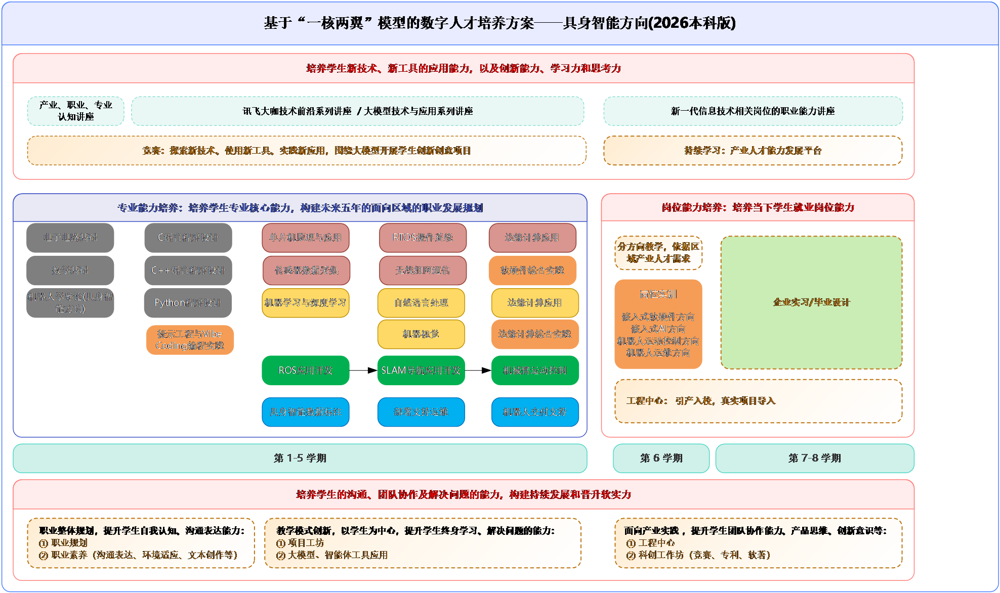

科大讯飞数字人才培养方案(2026)
具身智能领域（本科·星辰版）
李奎 编著
科大讯飞股份有限公司
二〇二六年八月
修订说明
| 大版本号 | 版本号 | 发布/更新日期 | 修订人员 | 说明 |
| 2025版 | V3.0 | 2025年06月20日 | 江金凤、郑申文 | 基于大模型、智能体、具身智能等新技术对人工智能领域的影响，完成对培养方案的初步优化，将人工智能方向细分为2个方向（智能体方向、具身智能方向）；新增职业素养培育方案；新增AI+工具赋能场景描述 |
| 2025版 | V3.1 | 2025年09月24日 | 李奎 | 修改背景；修改产业人才培养方案 |
| 2025版 | V3.2 | 2025年10月24日 | 李奎 | 修改产业人才培养方案 |
| 2026版 | V4.0 | 2026年05月 | 李奎 | 融合具身智能产业分析报告需求，完善课程体系与产业需求对应关系；融合2026版应用型本科人才培养方案的课程体系、实践教学、教学进程、课程大纲等内容；新增实验室建设方案；适配2026版本科专业目录 |
| 2026版 | V4.1 | 2026年07月 | 李奎 | 在核心课程教学大纲中补充推荐教材信息；单片机原理与应用（51/STM32）配套STM32F103/F407芯片；ROS2 机器人系统更新为ROS2体系；机器视觉课程结合OpenCV、YOLO及边缘计算NPU方案。 |
目录
一、背景
二、产业人才培养规格
2.1 讯飞职业胜任力模型
2.2 讯飞职业胜任力模型的达成路径
三、产业人才培养特色
3.1 “三段式”培养模式
3.2 “项目工坊”教学模式
3.3 “体验式”职业素养培育
3.4 “智协式”AI+工具赋能
四、产业分析与人才需求
4.1 具身智能产业发展概况
4.2 产业链全景与人才需求
4.3 岗位需求与核心技能图谱
4.4 产业需求与课程对应体系
五、培养定位与目标
六、课程体系
6.1 通识教育课程
6.2 学科基础课程
6.3 专业核心课程
6.4 专业方向课程
6.5 专业选修课程
七、实践教学环节
八、教学进程安排
九、企业实习与毕业设计
十、课程与毕业要求对应关系
十一、主要就业岗位与行业应用场景
11.1 主要就业岗位
11.2 行业应用场景与课程支撑
十二、产教融合保障机制
十三、实验室建设方案
13.1 具身智能实验室综合方案
13.2 核心硬件产品说明
十四、适配本科专业目录
附录：核心课程教学大纲
一、背景
人才培养方案是学校落实党和国家关于人才培养总体要求，组织开展教学活动、安排教学任务的规范性文件，是实施人才培养和开展质量评价的基本依据。当前，我国以《关于深入实施”人工智能+“行动的意见》为核心指引，全力推动人工智能与经济社会各领域深度融合，明确提出”到2027年新一代智能终端、智能体等应用普及率超70%，2030年超90%，2035年，我国全面步入智能经济和智能社会发展新阶段，为基本实现社会主义现代化提供有力支撑”的核心目标，为智能体工程技术专业的建设提供了顶层政策支撑。
2025年《政府工作报告》首次将”具身智能”列入国家未来产业重点培育清单，标志着具身智能正式上升为国家战略层面的重点发展方向。工业和信息化部《人形机器人创新发展指导意见》首次以单独文件形式对人形机器人发展做出全面战略规划。教育部《高等学校人工智能创新行动计划》推进”新工科”建设，完善人工智能领域多主体协同育人机制。
其中，智能体技术与具身智能作为人工智能领域的关键技术，通过深度产教融合，重点突破动态场景智能感知、自主决策、智能操作与智能控制等关键技术瓶颈，实现”人机协同、跨界融合”智能经济形态的核心载体。智能体技术承担着”跨场景智能决策与协同”的核心功能，具身智能则聚焦”物理世界交互与自主执行”的落地能力，二者共同构成了”人工智能+产业”“人工智能+民生”“人工智能+治理”等重点行动的技术底座，成为破解”从技术创新到场景落地”关键瓶颈的核心抓手。因此，亟需通过本科专业建设培育专项人才，以支撑政策目标落地。
产业背景数据：
截至2024年底，全国智能机器人产业相关企业已达45.17万家，较2020年底增长206.73%，呈现爆发式增长态势。2025年前5个月，国内机器人产业招聘职位数同比增长6%，其中人形机器人领域招聘需求同比增长409%，求职人数同比增长396%，供需双增特征显著。投融资方面，截至2025年，我国具身智能和机器人领域投资事件达744起，融资总额735.43亿元人民币。据Grand View Research预测，到2030年，仅人形机器人、自动驾驶、无人机三大核心赛道的累计市场规模将达到3398.4亿美元，产业增长空间巨大。
二、产业人才培养规格
2.1 讯飞职业胜任力模型
科大讯飞在产教融合领域，提出校企合作培养的数字人才要求具备”职业发展所需要的底层能力+项目实践能力+AI应用能力”三个能力要素，即：讯飞职业胜任力模型2.0。
“一核”-底层能力：
是指在职业发展过程中所需要具备的职业素养。在数字化与智能化深度重塑职场生态的当下，“职业素养”已不再是传统意义上的软技能集合，而是进化为驱动人才价值实现跨越式跃升的核心动力引擎。基于对企业用人需求的深度调研，学习能力、创新思维能力、沟通表达能力以及积极主动的意识，是学生成功迈入职场并实现可持续发展的核心基石。
“两翼”-项目+：
是指围绕真实产业需求，以生产实践类项目为主要牵引，将企业项目运作流程、思维融入实践教学体系，提升学生的岗位专业技能和职业素养。
“两翼”-AI+：
大模型时代下，新技术、新工具、新方法层出不穷，AI与各个行业中的融合不断扩大、深入。了解、掌握AI技术（或工具）将有助于提高工作效率，优化工作流程，并使个人在竞争激烈的职场中脱颖而出。
2.2 讯飞职业胜任力模型的达成路径
科大讯飞依据多年办学经验总结出了讯飞人才培养实现战略2.0，以人才培养模式、教学模式、职业素养培育、AI+工具赋能、人才培养方案设计为抓手，建立讯飞特色人才培养体系，促进职业胜任力的达成。
三、产业人才培养特色
3.1 “三段式”培养模式
为实现专业紧密对接产业，教育内容与产业发展同步更新，培养符合产业需求的创新应用型人才，有效提高学生的分析、解决问题与实践动手能力，采用三段式培养模式，即”2.5+0.5+1（本科层次）“培养模式：
第一阶段，第1-5学期，为数理基础及专业核心基础课程培养。该阶段强化和拓宽数理基础，专业核心基础课程学习和应用，为学生后期专业学习打好扎实基础的同时，构建未来五年的职业发展路径。
第二阶段，第6学期，面向产业最新发展趋势和岗位能力要求，设计并开展专业方向课程学习，强化项目实践能力，拉近行业差距。该阶段学生从专业内涵能力建设进阶到产业技术能力培养。
第三阶段，第7-8学期，为企业实习与毕业设计阶段。学生需要至少入职企业实习6个月以上，初步建立职业发展规划，为后续高质量就业提供基础保障。
3.2 “项目工坊”教学模式
在经典的学习金字塔模型里，以学生参与为主的主动学习方式（如：学生实践、学生讲课、小组讨论等）的知识技能留存率最高。因此，在培养方案中的专业课程和项目实践环节，采用项目工坊教学模式，搭建一个多元化、实践性、互助合作和个性化发展的学习空间，引入真实项目案例，融入企业项目运作方式：
• 教学方式：从”知识传递”转变为”解决问题”
• 教学场景：从”传统课堂”转变为”多元化学习空间”
• 讲师角色：从”演讲者”转变为”导演”
• 学生角色：从”听众”变成”解决问题的人”
3.3 “体验式”职业素养培育
职业素养培育遵循类似”10000小时定律”的累积法则，需通过长期持续的刻意练习，才能内化为条件反射般的行为自觉。在设计教育方案时，将沟通表达、创新思维、团队协作及自主学习等核心职业素养要素，巧妙地融入”课前五分钟”以及常规竞赛和活动中。原则上，学生在实习之前必须完成4次”课前五分钟”活动和6次学科类/综合类竞赛。
3.4 “智协式”AI+工具赋能
以ChatGPT、DeepSeek等大模型为代表的通用人工智能（AGI）取得突破性进展，标志着AI技术进入能力泛化、门槛降低的新纪元。企业迫切需要能高效驾驭AI工具以显著提升开发效率（AI+编程）、优化流程（AI+办公）、激发内容创新（AI+创作）、加速知识获取与迭代（AI+学习）以及进行深度分析与战略思考（AI+认知）的复合型人才。系统性融入AI工具赋能，是高校重塑信息技术人才培养体系，使其适应并引领智能时代的必然选择。
四、产业分析与人才需求
4.1 具身智能产业发展概况
具身智能作为人工智能与物理实体深度融合的新兴领域，已成为全球科技竞争的前沿赛道。全球范围内，英伟达创始人黄仁勋明确指出”人工智能的下一个前沿是具身智能”，特斯拉、OpenAI、Figure AI等国际企业纷纷加码布局，国内智元、宇树、优必选等企业也在软硬件全栈领域实现了突破性进展。
当前具身智能产业整体处于发展早期，正从”科研试验”迈向”进厂入户”的商用落地初期，呈现三大核心特征：
① 融合创新加速：推动软硬融合、知行合一、虚实贯通，突破传统智能瓶颈；
② 产品形态多元：从单一功能机器人向”上天入海涉险”的多元化产品拓展，覆盖工业、家庭、商业、应急等多个场景；
③ 生态体系完善：逐步形成行业应用、产品服务、技术服务、基础设施四大板块的完整产业链。
4.2 产业链全景与人才需求
根据中国信通院《具身智能产业发展白皮书》的划分，具身智能产业链可分为四大核心板块：
（一）上游：基础设施层
核心环节：执行系统（关节电机、减速器、伺服驱动器）、传感系统（激光雷达、视觉传感器、力控传感器、IMU）、计算芯片（边缘AI芯片、异构计算芯片）、工具平台（仿真训练平台、数据标注平台、开发工具链）。人才需求特征：对硬件研发、精密制造、芯片设计人才需求旺盛，要求具备扎实的硬件设计、材料科学、微电子技术基础，是本科层次研发人才的核心就业方向之一。
（二）中游：产品服务层
核心产品形态：人形机器人（双足/轮足，企业占比32%）、移动机器人（四足、协作、AMR）、智能运载装备（无人车、无人机、无人船）。人才需求特征：需要大量的系统集成、软硬件开发人才，既要懂机械结构设计，也要懂算法与控制，是复合型人才的核心需求领域，本科层次侧重系统架构设计。
（三）中上游：技术服务层
核心技术方向：算法模型（具身基础大模型、世界模型、运动控制算法、感知融合算法，企业占比43%）、系统集成、数据服务。人才需求特征：高端人才最集中的领域，对算法研发、AI模型训练人才需求迫切，要求具备扎实的数学基础、深度学习、强化学习等技术能力，主要面向本科及以上学历的研发型人才。
（四）下游：行业应用层
核心应用场景：工业制造（人机协作、产线柔性改造、质检运维）、家庭服务（家政、养老、教育陪护）、商业服务（零售导购、酒店服务、物流配送）、应急特种（危险环境作业、抢险救援、巡检勘探）。人才需求特征：对应用型人才需求最大，需要大量能够完成现场部署、调试运维、技术支持的人才，同时也需要能够理解行业场景的解决方案人才。
4.3 岗位需求与核心技能图谱
基于《具身智能从业人员能力要求》与智联招聘人才报告，具身智能产业的岗位可分为五大职业方向：
| 职业方向 | 核心岗位 | 学历适配 | 核心技能要求 | 平均月薪 | 需求增速 |
| 基础理论与前沿研究 |
机器人学研究员 具身智能研究员 |
硕博 |
机器人学、深度学习 世界模型、强化学习 |
35000+ | 120% |
| 感知、决策与控制算法 |
感知融合工程师 定位建图工程师 运动控制工程师 强化学习工程师 |
本科/硕博 |
多模态感知、SLAM 运动控制、强化学习 大模型应用 |
25368 | 479% |
| 软件、硬件与系统架构 |
系统架构师 硬件工程师 嵌入式开发工程师 ROS开发工程师 |
本科 |
系统架构、硬件设计 RTOS、嵌入式开发 ROS2、C++/Python |
19169 | 239% |
| 仿真、测试与数据工程 |
仿真工程师 模型评测工程师 自动化测试工程师 数据治理工程师 |
本科 |
仿真建模、测试自动化 数据治理、安全验证 |
18500 | 22% |
| 部署、运维与技术支持 |
部署工程师(FAE) 运维工程师(RobotOps) |
本科 |
现场部署、RobotOps 故障排查、硬件维修 ROS基础、Linux |
12000 | 45% |
4.4 产业需求与课程对应体系
基于岗位的技能要求，构建从技能到课程的对应体系，确保人才培养与产业需求精准匹配：
| 技能模块 | 核心技能 | 对应课程 | 培养侧重 |
| 基础理论 |
机器人学导论（运动学 / 动力学） 数学基础 |
智能体导论(具身智能方向) 高等数学 线性代数 |
理论深度 数学建模能力 |
| 感知技术 |
传感器原理 多模态融合 |
传感器原理与数据采集 多模态大模型应用 机器视觉 |
算法设计 融合模型研发 |
| 算法技术 |
运动控制 SLAM 强化学习 |
高级运动规划与决策 SLAM技术基础 机器学习与深度学习 |
算法研发 模型优化 |
| 软硬件技术 |
ROS开发 嵌入式开发 硬件设计 |
ROS2 机器人系统 单片机原理与应用（51/STM32） 电机驱动与运动控制 |
系统架构 底层开发 |
| 仿真部署 |
仿真建模 边缘部署 |
机器人仿真与Sim2Real技术 模型压缩与边缘部署 |
平台设计 方案规划 |
本方案课程体系对产业需求的覆盖情况：
经过对照分析，本培养方案的课程体系已基本覆盖产业分析报告中提出的核心技能需求：
• 感知层需求：由”传感器原理与数据采集”“机器视觉”“多模态大模型应用”等课程覆盖；
• 决策层需求：由”机器学习与深度学习”“神经网络与深度学习”“边缘计算与嵌入式AI部署”等课程覆盖；
• 控制层需求：由”电机驱动与运动控制”“高级运动规划与决策”“机器人学导论（运动学 / 动力学）”等课程覆盖；
• 系统层需求：由”ROS2 机器人系统”“单片机原理与应用（51/STM32）”“机器人系统与应用”等课程覆盖；
• 仿真与部署需求：由”机器人仿真与Sim2Real技术”“模型压缩与边缘部署”等课程覆盖。
同时，根据产业报告中对”世界模型”“具身大模型”“VLA模型”等前沿技术的需求，在专业选修课中增设了”大模型技术与应用”“SLAM技术基础”“数字孪生技术”等课程，以强化前沿技术覆盖。
五、培养定位与目标
培养定位：面向智能经济和智能社会发展需求，培养具备扎实的智能体工程技术理论基础、较强的工程实践能力和创新能力，掌握智能体系统设计、动态场景感知、自主决策与协同控制等核心技术，能够在人工智能、智能制造、智慧服务等领域从事智能体相关产品研发、系统集成、应用部署及运维管理等工作的高素质复合型本科人才。培养目标以“厚基础、强实践、重创新、懂应用”为核心，具体分为知识、能力、素养三个维度：知识维度要求学生系统掌握数学与自然科学基础知识、计算机科学与技术核心理论、智能体工程技术专业知识（包括智能感知、自主决策、人机交互、智能控制等）以及相关领域应用知识；能力维度强调学生具备智能体系统分析与设计能力、项目开发与实践能力、AI工具集成与应用能力、问题解决与创新能力以及团队协作与沟通能力；素养维度注重培养学生的工程伦理意识、终身学习习惯、社会责任感和国际视野，使其成为适应智能时代发展的“AI原住民”人才。课程体系构建遵循“底层基础+核心技术+应用实践+职业拓展”的逻辑框架，底层基础课程涵盖高等数学、线性代数、概率论与数理统计、大学物理、程序设计基础、数据结构与算法等，夯实学生的数理与计算机基础；核心技术课程聚焦智能体专业领域，包括人工智能导论、机器学习、深度学习、智能感知技术、自主决策原理、机器人学、智能控制技术、多智能体系统等，培养学生的核心技术能力；应用实践课程通过项目实训、专业实习、毕业设计等环节，结合“项目工坊”教学模式，提升学生解决实际问题的能力；职业拓展课程则融入沟通表达、团队管理、创新创业、AI伦理与安全等内容，全面提升学生的职业素养。同时，依据产业发展动态以及技术前沿趋势，定期对课程体系开展优化调整工作，确保教学内容与产业需求保持同步。
具身智能方向产业数字人才培养方案整体示意图如下：

培养目标以”厚基础、强实践、重创新、懂应用”为核心，具体分为知识、能力、素养三个维度：
知识维度：
要求学生系统掌握数学与自然科学基础知识、计算机科学与技术核心理论、智能体工程技术专业知识（包括智能感知、自主决策、人机交互、智能控制等）以及相关领域应用知识。
能力维度：
强调学生具备智能体系统分析与设计能力、项目开发与实践能力、AI工具集成与应用能力、问题解决与创新能力以及团队协作与沟通能力。
素养维度：
注重培养学生的工程伦理意识、终身学习习惯、社会责任感和国际视野，使其成为适应智能时代发展的”AI原住民”人才。
培养目标具体分解：
目标1（工程能力）：具备具身智能系统分析、设计与开发能力，能够运用人工智能、机器人学、控制理论等专业知识解决复杂工程问题。
目标2（创新能力）：具备创新意识和工程实践能力，能够在具身智能领域进行技术研究、产品开发和方案设计。
目标3（职业素养）：具备良好的工程伦理意识、社会责任感、团队协作精神和国际视野，能够在多学科背景下进行有效沟通与合作。
目标4（终身学习）：具有自主学习和终身学习的意识与能力，能够持续跟踪具身智能技术前沿发展。
六、课程体系
课程体系构建遵循”底层基础+核心技术+应用实践+职业拓展”的逻辑框架，围绕具身智能”感知—决策—执行”技术栈构建，涵盖AI基础算法、机器人系统、传感与控制三大模块。
6.1 通识教育课程
通识教育课程包括思想政治理论课、大学英语、大学体育、军事理论与训练、心理健康教育、创新创业基础、形势与政策、安全教育、职业生涯规划与就业指导等，约50学分。具体课程参照学校统一的通识教育课程方案执行。
6.2 学科基础课程
| 课程编号 | 课程名称 | 学分 | 学时 | 讲授 | 实验/上机 | 开课学期 |
| X13001001/02 | 高等数学A（一）/（二） | 10 | 160 | 160 | 1-2 | |
| X13001005 | 线性代数 | 2.5 | 40 | 40 | 2 | |
| X13001007 | 概率论与数理统计 | 3 | 48 | 48 | 3 | |
| X12001001/02 | 大学物理A（一）/（二） | 6 | 96 | 96 | 2-3 | |
| S12001001/02 | 大学物理实验A（一）/（二） | 2 | 64 | 64 | 2-3 | |
| X13001007 | C语言程序设计A | 3.5 | 64 | 48 | 16 | 1 |
| K13001003 | 离散数学 | 3 | 48 | 48 | 2 | |
| K14001016 | 电工电子技术B | 3 | 56 | 40 | 16 | 3 |
6.3 专业核心课程
专业核心课程围绕具身智能”感知—决策—执行”技术栈构建，涵盖AI基础算法、机器人系统、传感与控制三大模块：
| 课程编号 | 课程名称 | 学分 | 学时 | 讲授 | 实验/上机 | 开课学期 | 课程模块 |
| Z11021007 | 智能体导论(具身智能方向) | 3 | 48 | 48 | 1 | 专业导论 | |
| Z11021008 | Python程序设计A | 4 | 64 | 64 | 3 | 编程基础 | |
| S11021002 | Python程序设计A实验 | 2 | 32 | 32 | 3 | 编程基础 | |
| Z11021002 | 数据结构与算法A | 4 | 64 | 56 | 8 | 4 | 编程基础 |
| Z11021001 | 信息与最优化算法 | 2.5 | 40 | 40 | 4 | 算法基础 | |
| Z11021009 | 机器学习 | 3.5 | 64 | 48 | 16 | 5 | AI算法 |
| Z11021010 | 边缘计算与嵌入式AI部署 | 3.5 | 64 | 48 | 16 | 5 | AI算法 |
| Z11021013 | 神经网络与深度学习 | 4 | 72 | 56 | 16 | 5 | AI算法 |
| Z11021003 | 操作系统 | 3 | 48 | 40 | 8 | 4 | 系统基础 |
| Z11021004 | 数据库原理及应用 | 3 | 56 | 40 | 16 | 4 | 系统基础 |
| NEW001 | 单片机原理与应用（51/STM32） | 3 | 56 | 40 | 16 | 4 | 硬件基础 |
| NEW002 | 机器人学导论（运动学 / 动力学） | 3 | 48 | 40 | 8 | 5 | 机器人 |
| NEW003 | 传感器原理与数据采集 | 2.5 | 48 | 32 | 16 | 5 | 感知 |
| NEW004 | 电机驱动与运动控制 | 3 | 56 | 40 | 16 | 5 | 控制 |
| NEW005 | ROS2 机器人系统 | 3 | 56 | 32 | 24 | 5 | 系统集成 |
| Z11021006 | 专业导论 | 1 | 16 | 16 | 1-7 | 专业导论 |
6.4 专业方向课程（第6学期，选修一个方向）
方向一：嵌入式软硬件方向
方向二：嵌入式AI方向
| 课程编号 | 课程名称 | 学分 | 学时 | 讲授 | 实验/上机 | 开课学期 |
| DIR101 | 机器人仿真与Sim2Real技术 | 3 | 48 | 24 | 24 | 6 |
| DIR102 | 高级运动规划与决策 | 4 | 64 | 32 | 32 | 6 |
| DIR103 | 机器人深度学习系统 | 4 | 64 | 32 | 32 | 6 |
| DIR104 | 多模态感知与具身推理综合实践 | 3 | 48 | 24 | 24 | 6 |
方向三：机器人运动控制方向
方向四：机器人运维方向
| 课程编号 | 课程名称 | 学分 | 学时 | 讲授 | 实验/上机 | 开课学期 |
| DIR201 | 高级电机伺服控制与驱动 | 4 | 64 | 32 | 32 | 6 |
| DIR202 | 机器人系统动力学与控制 | 3 | 48 | 24 | 24 | 6 |
| DIR203 | 边缘计算与嵌入式AI部署 | 4 | 64 | 32 | 32 | 6 |
| DIR204 | 实时系统与机器人通信综合实践 | 3 | 48 | 24 | 24 | 6 |
6.5 专业选修课程（至少选修8学分）
| 课程编号 | 课程名称 | 学分 | 学时 | 讲授 | 实验/上机 | 开课学期 |
| E001 | 算法分析与设计 | 2 | 32 | 32 | 5 | |
| E002 | 机器视觉 | 3 | 48 | 32 | 16 | 5 |
| E003 | 自然语言处理 | 2.5 | 48 | 32 | 16 | 6 |
| E004 | 数字图像处理 | 3 | 48 | 40 | 8 | 6 |
| E005 | 多模态大模型应用 | 2.5 | 48 | 32 | 16 | 6 |
| E006 | 数字孪生技术 | 2 | 32 | 24 | 8 | 6 |
| E007 | SLAM技术基础 | 2 | 32 | 16 | 16 | 6 |
| E008 | 模型压缩与边缘部署 | 2 | 32 | 16 | 16 | 6 |
| E009 | 大数据挖掘与分析 | 3 | 64 | 48 | 16 | 6 |
| E010 | 大模型技术与应用 | 2 | 32 | 16 | 16 | 6 |
| E011 | 具身智能伦理与安全 | 1.5 | 24 | 24 | 6 |
七、实践教学环节
实践教学环节注重”做中学”，通过课程实验、课程设计、综合实训、企业实习、毕业设计等多层次实践，培养学生解决实际工程问题的能力。实践教学学分占总学分比例不低于30%，符合应用型本科人才培养要求。
| 课程编号 | 课程名称 | 周数/学时 | 学分 | 开课学期 |
| S23001001 | 军事训练 | 2周 | 2 | 1 |
| S21001003 | 工程训练C | 2周 | 2 | 2 |
| S11001001 | 电子工艺实习A | 2周 | 2 | 4 |
| P001 | 程序设计综合实践 | 1周 | 1 | 3 |
| P002 | 机器学习与深度学习综合实践 | 2周 | 2 | 5 |
| P003 | 嵌入式系统综合实践 | 2周 | 2 | 4 |
| P004 | 机器人视觉综合实践 | 1周 | 1 | 5 |
| P005 | 机器人运动控制综合实践 | 2周 | 2 | 5 |
| P006 | ROS2系统综合实践 | 2周 | 2 | 5 |
| S11021003 | 机器学习课程设计 | 2周 | 2 | 5 |
| S11021001 | 生产实习 | 1周 | 1 | 6 |
| P007 | 岗位方向综合实践 | 4周 | 4 | 6 |
| P008 | 具身智能系统综合实训 | 2周 | 2 | 7 |
| S11021008 | 毕业设计开题周 | 1周 | 0 | 7 |
| S11021009 | 具身智能毕业实习 | 2周 | 2 | 8 |
| S11021010 | 具身智能毕业设计 | 14周 | 14 | 8 |
八、教学进程安排
以下为各学期课程安排，课程之间存在明确的先修后续关系。每学期周学时控制在22-24学时（不含体育和实践环节），确保学生学习负担合理。
第一学期（约22学时）
| 序号 | 课程名称 | 学分 | 学时 | 讲授 | 实验 | 实践 | 周学时 | 开课周 | 计分方式 |
| 1 | 思想道德与法治 | 3 | 48 | 40 | 8 | 3 | 1-16 | 百分制 | |
| 2 | 大学英语（一） | 2.5 | 48 | 32 | 16 | 3 | 1-16 | 百分制 | |
| 3 | 大学体育（一） | 1 | 24 | 24 | 2 | 1-12 | 五级制 | ||
| 4 | 形势与政策（一） | 0.25 | 10 | 10 | 2/ | 1-8 | 五级制 | ||
| 5 | 心理健康教育 | 2 | 32 | 16 | 16 | 2 | 1-16 | 五级制 | |
| 6 | 高等数学A（一） | 5 | 80 | 80 | 5 | 1-16 | 百分制 | ||
| 7 | C语言程序设计A | 3.5 | 64 | 48 | 16 | 4 | 1-16 | 百分制 | |
| 8 | 智能体导论(具身智能方向) | 3 | 48 | 48 | 3 | 1-16 | 百分制 | ||
| 9 | 专业导论 | 0 | 4 | 4 | 1-4 | 五级制 |
第二学期（约22学时）
| 序号 | 课程名称 | 学分 | 学时 | 讲授 | 实验 | 实践 | 周学时 | 开课周 | 计分方式 |
| 1 | 中国近现代史纲要 | 3 | 48 | 40 | 8 | 3 | 1-16 | 百分制 | |
| 2 | 大学英语（二） | 2.5 | 48 | 32 | 16 | 3 | 1-16 | 百分制 | |
| 3 | 大学体育（二） | 1 | 32 | 32 | 2 | 1-16 | 五级制 | ||
| 4 | 形势与政策（二） | 0.25 | 10 | 10 | 2/ | 1-8 | 五级制 | ||
| 5 | 创新创业基础 | 2 | 32 | 32 | 2 | 1-16 | 五级制 | ||
| 6 | 高等数学A（二） | 5 | 80 | 80 | 5 | 1-16 | 百分制 | ||
| 7 | 线性代数 | 2.5 | 40 | 40 | 3 | 1-14 | 百分制 | ||
| 8 | 大学物理A（一） | 3 | 48 | 48 | 3 | 1-16 | 百分制 | ||
| 9 | 大学物理实验A（一） | 1 | 32 | 32 | 2 | 1-16 | 五级制 | ||
| 10 | 离散数学 | 3 | 48 | 48 | 3 | 1-16 | 百分制 | ||
| 11 | 工程训练C | 2 | 2周 | 17-18 | 五级制 |
第三学期（约22学时）
| 序号 | 课程名称 | 学分 | 学时 | 讲授 | 实验 | 实践 | 周学时 | 开课周 | 计分方式 |
| 1 | 马克思主义基本原理 | 3 | 48 | 40 | 8 | 3 | 1-16 | 百分制 | |
| 2 | 大学英语（三） | 2.5 | 48 | 32 | 16 | 3 | 1-16 | 百分制 | |
| 3 | 大学体育（三） | 1 | 32 | 32 | 2 | 1-16 | 五级制 | ||
| 4 | 形势与政策（三） | 0.25 | 10 | 10 | 2/ | 1-8 | 五级制 | ||
| 5 | 大学物理A（二） | 3 | 48 | 48 | 3 | 1-16 | 百分制 | ||
| 6 | 概率论与数理统计 | 3 | 48 | 48 | 3 | 1-16 | 百分制 | ||
| 7 | 大学物理实验A（二） | 1 | 32 | 32 | 2 | 1-16 | 五级制 | ||
| 8 | 复变函数与积分变换 | 2 | 32 | 32 | 2 | 1-16 | 百分制 | ||
| 9 | 电工电子技术B | 3 | 56 | 40 | 16 | 4 | 1-14 | 百分制 | |
| 10 | Python程序设计A | 4 | 64 | 64 | 4 | 1-16 | 百分制 | ||
| 11 | Python程序设计A实验 | 2 | 32 | 32 | 2 | 1-16 | 五级制 | ||
| 12 | 程序设计综合实践 | 1 | 1周 | 17 | 五级制 | ||||
| 13 | 大学生职业生涯规划 | 0.5 | 16 | 16 | /2 | 9-16 | 五级制 |
第四学期（约22学时）
| 序号 | 课程名称 | 学分 | 学时 | 讲授 | 实验 | 实践 | 周学时 | 开课周 | 计分方式 |
| 1 | 毛泽东思想和中国特色社会主义理论体系概论 | 3 | 48 | 40 | 8 | 3 | 1-16 | 百分制 | |
| 2 | 大学体育（四） | 1 | 32 | 32 | 2 | 1-16 | 五级制 | ||
| 3 | 形势与政策（四） | 0.25 | 10 | 10 | 2/ | 1-8 | 五级制 | ||
| 4 | 数据结构与算法A | 4 | 64 | 56 | 8 | 4 | 1-16 | 百分制 | |
| 5 | 信息与最优化算法 | 2.5 | 40 | 40 | 3 | 1-14 | 百分制 | ||
| 6 | 操作系统 | 3 | 48 | 40 | 8 | 3 | 1-16 | 百分制 | |
| 7 | 数据库原理及应用 | 3 | 56 | 40 | 16 | 4 | 1-14 | 百分制 | |
| 8 | 单片机原理与应用（51/STM32） | 3 | 56 | 40 | 16 | 4 | 1-14 | 百分制 | |
| 9 | 嵌入式系统综合实践 | 2 | 2周 | 17-18 | 五级制 | ||||
| 10 | 电子工艺实习A | 2 | 2周 | 17-18 | 五级制 |
第五学期（约22学时）
| 序号 | 课程名称 | 学分 | 学时 | 讲授 | 实验 | 实践 | 周学时 | 开课周 | 计分方式 |
| 1 | 习近平新时代中国特色社会主义思想概论 | 3 | 48 | 40 | 8 | 3 | 1-16 | 百分制 | |
| 2 | 形势与政策（五） | 0.25 | 10 | 10 | 2/ | 1-8 | 五级制 | ||
| 3 | 机器学习 | 3.5 | 64 | 48 | 16 | 4 | 1-16 | 百分制 | |
| 4 | 边缘计算与嵌入式AI部署 | 3.5 | 64 | 48 | 16 | 4 | 1-16 | 百分制 | |
| 5 | 神经网络与深度学习 | 4 | 72 | 56 | 16 | 4 | 1-18 | 百分制 | |
| 6 | 机器人学导论（运动学 / 动力学） | 3 | 48 | 40 | 8 | 3 | 1-16 | 百分制 | |
| 7 | 传感器原理与数据采集 | 2.5 | 48 | 32 | 16 | 3 | 1-16 | 百分制 | |
| 8 | 电机驱动与运动控制 | 3 | 56 | 40 | 16 | 4 | 1-14 | 百分制 | |
| 9 | ROS2 机器人系统 | 3 | 56 | 32 | 24 | 4 | 1-14 | 百分制 | |
| 10 | 专业选修课 | 2 |
第六学期（约20学时）
| 序号 | 课程名称 | 学分 | 学时 | 讲授 | 实验 | 实践 | 周学时 | 开课周 | 计分方式 |
| 1 | 形势与政策（六） | 0.25 | 10 | 10 | /2 | 9-16 | 五级制 | ||
| 2 | 大学生就业指导 | 0.5 | 16 | 2/ | 1-8 | 五级制 | |||
| 3 | 专业方向课（4门） | 14 | 224 | 112 | 112 | 14 | 1-16 | 百分制 | |
| 4 | 专业选修课 | 4 | |||||||
| 5 | 生产实习 | 1 | 1周 | 五级制 |
第七学期（约10学时）
| 序号 | 课程名称 | 学分 | 学时 | 讲授 | 实验 | 实践 | 周学时 | 开课周 | 计分方式 |
| 1 | 形势与政策（七） | 0.5 | 10 | 10 | 2/ | 1-8 | 五级制 | ||
| 2 | 第二课堂 | 2 | |||||||
| 3 | 具身智能系统综合实训 | 2 | 2周 | 1-2 | 五级制 | ||||
| 4 | 毕业设计开题周 | 0 | 1周 | 3 | —— | ||||
| 5 | 专业选修课 | 2 |
第八学期（企业实习+毕业设计）
| 序号 | 课程名称 | 学分 | 学时 | 讲授 | 实验 | 实践 | 周学时 | 开课周 | 计分方式 |
| 1 | 具身智能毕业实习 | 2 | 2周 | 1-2 | 五级制 | ||||
| 2 | 具身智能毕业设计 | 14 | 14周 | 3-16 | 五级制 |
课程先修后续关系说明：
• C语言程序设计A（第1学期）→ Python程序设计A（第3学期）→ 数据结构与算法A（第4学期）
• 高等数学+线性代数+概率统计（第1-3学期）→ 机器学习/边缘计算与嵌入式AI部署/神经网络与深度学习（第5学期）
• 电工电子技术B（第3学期）→ 单片机原理与应用（51/STM32）（第4学期）→ 电机驱动与运动控制（第5学期）
• 大学物理A（第2-3学期）→ 机器人学导论（运动学 / 动力学）（第5学期）→ 高级运动规划与决策（方向课，第6学期）
• 机器学习（第5学期）→ 机器视觉/自然语言处理/多模态大模型应用（选修，第5-6学期）
• ROS2 机器人系统（第5学期）→ 机器人仿真与Sim2Real技术（方向课，第6学期）
• 传感器原理与数据采集（第5学期）→ 多模态大模型应用（选修，第6学期）
九、企业实习与毕业设计
9.1 企业实习
学生进入合作企业实习6个月以上，参与真实项目开发。企业实习是产教融合培养模式的核心环节，旨在让学生在真实产业环境中：
• 将课堂所学的理论知识应用于实际工程项目；
• 了解产业最新技术趋势和岗位能力要求；
• 培养团队协作、项目管理和职业沟通能力；
• 初步建立职业发展规划，为高质量就业提供保障。
实习期间实行校企双导师制度，企业导师负责技术指导和项目管理，校内导师负责学业指导和质量监控。
9.2 毕业设计
毕业设计选题紧密结合行业实际需求，由校企双导师联合指导。毕业设计要求学生综合运用所学知识，完成具有一定工程应用价值的设计或研究课题。毕业设计周期为14周，包括开题、中期检查、论文撰写和答辩等环节。
十、课程与毕业要求对应关系
| 编号 | 毕业要求 | 具体要求 |
| G1 | 工程知识 | 能够将数学、自然科学、工程基础和具身智能专业知识用于解决复杂工程问题。 |
| G2 | 问题分析 | 能够应用数学、自然科学和工程科学的基本原理，识别、表达并通过文献研究分析具身智能领域的复杂工程问题。 |
| G3 | 设计/开发解决方案 | 能够设计针对具身智能复杂工程问题的解决方案，设计满足特定需求的系统、单元或工艺流程，并体现创新意识。 |
| G4 | 研究 | 能够基于科学原理并采用科学方法对具身智能复杂工程问题进行研究，包括设计实验、分析与解释数据。 |
| G5 | 使用现代工具 | 能够针对具身智能复杂工程问题，开发、选择与使用恰当的技术、资源、现代工程工具和信息技术工具。 |
| G6 | 工程与社会 | 能够基于工程相关背景知识进行合理分析，评价具身智能工程实践和解决方案对社会、健康、安全、法律以及文化的影响。 |
| G7 | 环境和可持续发展 | 能够理解和评价针对具身智能复杂工程问题的专业工程实践对环境、社会可持续发展的影响。 |
| G8 | 职业规范 | 具有人文社会科学素养、社会责任感，能够在工程实践中理解并遵守工程职业道德和规范。 |
| G9 | 个人和团队 | 能够在多学科背景下的团队中承担个体、团队成员以及负责人的角色。 |
| G10 | 沟通 | 能够就具身智能领域的复杂工程问题与业界同行及社会公众进行有效沟通和交流。 |
| G11 | 项目管理 | 理解并掌握具身智能及相关领域工程管理原理与经济决策方法。 |
| G12 | 终身学习 | 具有自主学习和终身学习的意识，有不断学习和适应发展的能力。 |
核心课程与毕业要求对应关系矩阵（●表示强支撑，○表示弱支撑）：
| 课程名称 | G1 | G2 | G3 | G4 | G5 | G6 | G7 | G8 | G9 | G10 | G11 | G12 |
| C语言程序设计A | ● | ● | ||||||||||
| Python程序设计A | ● | ● | ||||||||||
| 数据结构与算法A | ● | ● | ||||||||||
| 机器学习 | ● | ● | ● | |||||||||
| 边缘计算与嵌入式AI部署 | ● | ● | ● | |||||||||
| 神经网络与深度学习 | ● | ● | ● | ● | ||||||||
| 机器人学导论（运动学 / 动力学） | ● | ● | ● | ● | ● | |||||||
| 单片机原理与应用（51/STM32） | ● | ● | ||||||||||
| 传感器原理与数据采集 | ● | ● | ||||||||||
| 电机驱动与运动控制 | ● | ● | ● | ● | ||||||||
| ROS2 机器人系统 | ● | ● | ● | ● | ||||||||
| 毕业设计 | ● | ● | ● | ● | ● | ● | ● |
十一、主要就业岗位与行业应用场景
11.1 主要就业岗位
本专业毕业生主要面向以下岗位：
| 岗位类型 | 岗位名称 | 核心职责 |
| 算法与仿真开发类 | 机器人软件工程师 | 机器人感知、决策、控制算法的开发与集成 |
| 算法与仿真开发类 | 机器视觉算法工程师 | 图像处理、目标检测、三维视觉等算法研发 |
| 算法与仿真开发类 | SLAM工程师 | 激光/视觉SLAM算法开发与优化 |
| 算法与仿真开发类 | 仿真平台开发工程师 | 机器人仿真环境搭建与Sim2Real迁移 |
| 算法与仿真开发类 | 具身智能算法工程师 | 具身大模型、VLA模型研发与任务规划 |
| 控制与嵌入式硬件类 | 机器人控制工程师 | 运动规划、轨迹生成、底层伺服控制 |
| 控制与嵌入式硬件类 | 电机控制工程师 | 伺服电机、关节模组的精确控制 |
| 控制与嵌入式硬件类 | 嵌入式开发工程师 | 机器人主控板、传感器、通信模块开发 |
| 控制与嵌入式硬件类 | 嵌入式AI工程师 | AI模型部署到嵌入式平台，模型压缩与量化 |
| 系统集成与应用类 | 机器人应用工程师 | 机器人部署、调试、任务编排和二次开发 |
| 系统集成与应用类 | 系统集成工程师 | 整合机器人本体、传感器、上位机等部件 |
| 行业应用类 | 智能制造工程师 | 工业机器人系统集成和智能产线优化 |
| 测试与运维类 | 机器人测试工程师 | 机器人系统测试方案设计与执行 |
| 测试与运维类 | 运维工程师 | 机器人集群的日常监控、维护和故障处理 |
核心能力与课程支撑：
• 感知能力：传感器原理与数据采集、机器视觉、多模态大模型应用等课程覆盖视觉/激光/IMU等感知技术栈
• 决策能力：机器学习、神经网络与深度学习、边缘计算与嵌入式AI部署等课程覆盖AI决策算法
• 控制能力：电机驱动与运动控制、高级运动规划与决策、机器人学导论（运动学 / 动力学）等课程覆盖运动控制全链路
• 系统能力：ROS2 机器人系统、嵌入式系统等课程覆盖系统集成能力
• 仿真能力：机器人仿真与Sim2Real技术（方向课）覆盖仿真平台开发能力
• 部署能力：模型压缩与边缘部署、边缘计算与嵌入式AI部署覆盖边缘推理部署能力
11.2 行业应用场景与课程支撑
本专业课程体系围绕具身智能典型行业应用场景构建，确保学生所学知识能够直接服务于实际产业需求：
（一）工业制造场景
以工业机器人为主，融合智能物联、自适应控制等技术，构建自动化生产线监控、智能物料搬运、精密装配及质量检测平台。支撑课程：机器人学导论（运动学 / 动力学）、电机驱动与运动控制、高级运动规划与决策、单片机原理与应用（51/STM32）、机器人仿真与Sim2Real技术。
（二）智能家居场景
以家庭服务机器人为核心，结合语音交互、视觉识别、自主导航等技术，构建安全监控、家务协助、健康管理等智能服务体系。支撑课程：机器人学导论（运动学 / 动力学）、ROS2 机器人系统、机器视觉、自然语言处理、多模态大模型应用、高级运动规划与决策。
（三）零售物流场景
以服务型机器人、无人车为核心，结合物联网、路径规划等技术，构建智能仓储、商品分拣、无人配送系统。支撑课程：机器人学导论（运动学 / 动力学）、ROS2 机器人系统、高级运动规划与决策、边缘计算与嵌入式AI部署、多模态大模型应用。
（四）应急特种场景
面向危险环境作业、抢险救援、巡检勘探等需求，解决人类无法涉足的场景需求。支撑课程：机器人学导论（运动学 / 动力学）、传感器原理与数据采集、高级运动规划与决策、单片机原理与应用（51/STM32）。
十二、产教融合保障机制
1. 校企合作机制
与行业领先企业建立深度合作关系，共建产业学院，联合开发课程体系，引入行业真实项目和案例。推行”订单班”等培养模式，让学生在校期间就能接触产业真实技术，提升人岗匹配度。
2. 师资队伍建设
实行”双师型”教师制度，聘请行业技术专家担任兼职教师，定期选派教师到企业挂职锻炼。组织原有教师参加具身智能领域的专项培训，引进一批具有产业经验的高端人才，打造一支既懂理论又懂实践的双师型教师队伍。
3. 课程资源建设
校企联合开发教材、实验指导书、项目案例库，确保教学内容与产业需求同步更新。依据产业发展动态以及技术前沿趋势，定期对课程体系开展优化调整工作，确保教学内容与产业需求保持同步。
4. 实习实训基地
建立稳定的校外实习基地，为学生提供不少于6个月的企业实习机会。建设具身智能仿真平台、机器人实训平台，引入真实的人形机器人、移动机器人等实训设备，让学生在实操中掌握核心技能。
5. 就业服务保障
依托行业资源，为学生提供就业指导、岗位推荐和职业发展规划服务。建立毕业生跟踪反馈机制，持续优化人才培养方案。
6. 职业素养培育
通过”课前五分钟”演讲、团队项目、技术沙龙等活动，系统培养学生沟通表达、团队协作、创新思维等核心职业素养。鼓励学生参加”挑战杯”、全国大学生智能汽车竞赛、中国机器人大赛等学科竞赛。
十三、实验室建设方案
为支撑具身智能方向人才培养的实践教学需求，科大讯飞聆智工程中心提供完善的实验室解决方案，涵盖从基础实操到行业应用的多层次实验环境。以下方案以40人/班为标准配置。
13.1 具身智能实验室综合方案
具身智能实验室以讯飞自研具身智能实验箱B2旗舰版和具身智能机器人小车C1为核心硬件载体，配套完整的实验资源与场景沙盘，构建从基础实操到行业应用的递进式实验环境。以下为满足50人/班教学需求的综合配置方案：
实验室综合配置清单（50人/班）：
| 序号 | 产品名称 | 型号 | 数量 | 单价（万元） | 小计（万元） | 用途说明 |
| 1 |
具身智能实验箱 B2旗舰版 |
XFLZ_EAI_B2_PRO | 26套 | 4.5 | 117.0 | 基础实操教学：机器视觉、语音交互、大模型交互、传感器、ROS机器人、SLAM、机械臂应用等核心模块训练 |
| 2 |
具身智能机器人 小车C1 |
XFLZ_EAI_CAR1 | 5台 | 3.8 | 19.0 | 综合实训：含智慧工厂沙盘、智慧交通沙盘，支持场景化综合实训、学科竞赛（全国大学生智能车竞赛-讯飞创意组、金砖国家职业技能大赛） |
| 3 | 宇树机器狗 | GO2 edu标准版 | 1台 | 5.0 | 5.0 | 行业应用实训：四足机器人，支持复杂地形行走与巡检场景演示 |
| 4 | 双臂人形机器人 | 采训推开发版 | 1台 | 45.0 | 45.0 | 支持端到端的采集训练推理任务 |
| 5 |
具身智能实验箱 B2旗舰版实验资源 |
/ | 1套 | 10.0 | 10.0 | 配套8大实践模块：机器视觉、语音交互、大模型交互、传感器、ROS机器人、SLAM、机械臂、综合实训；含上手教程、教学文档、源代码 |
| 6 |
具身智能机器人 小车C1实验资源 |
/ | 1套 | 10.0 | 10.0 | 配套8大实践模块：机器视觉、语音交互、大模型交互、ROS底盘控制、ROS机器人、SLAM、机械臂、竞赛基础；含上手教程、教学文档、源代码 |
| 7 |
综合实训场景 智慧交通-资源 |
/ | 1套 | 5.0 | 5.0 | 视觉数据标注/训练/推理、道路线检测、交通标识识别、车载座舱大模型交互、机械臂采训推综合应用 |
| 8 |
综合实训场景 智慧工厂-资源 |
/ | 1套 | 5.0 | 5.0 | 视觉缺陷检测/产品分类、自动避障导航、机械臂抓取搬运综合应用 |
| 9 |
综合实训场景 智慧交通-培训 |
/ | 1套 | 5.0 | 5.0 | 线下培训服务5天，1名主讲工程师+1名辅助技术支持 |
| 10 |
综合实训场景 智慧工厂-培训 |
/ | 1套 | 5.0 | 5.0 | 线下培训服务5天，1名主讲工程师+1名辅助技术支持 |
| 11 |
实验室套装延保 服务三年 |
/ | 1套 | 6.5 | 6.5 | 产品非人为损坏，三年免费保修服务 |
合计金额：约232.5万元（以实际询价为准）
13.2 实验室适用专业
适配人工智能、机器人工程、电子信息工程、物联网工程，匹配部分智能科学与技术、智能制造工程、自动化等相关课程和岗位。
13.3 核心硬件产品说明
| 产品名称 | 型号 | 核心特性 |
|
具身智能实验箱 B2旗舰版 |
XFLZ_EAI_B2_PRO | 集成机器视觉系统、语音处理系统、机械手臂及多种嵌入式应用模块；板载6TOPS边缘计算平台，支持TensorFlow、PyTorch等主流深度学习框架；部署AI大模型，实现本地化语音对话、图像推理等功能；支持机器视觉、ROS机器人、SLAM、自然语言处理、大模型交互开发等课程；配置6自由度机械臂及工业微型流水线；支持Ubuntu22.04、FreeRTOS等系统。 |
|
具身智能机器人 小车C1 |
XFLZ_EAI_CAR1 | 集成机器视觉、语音处理、机械手臂、深度相机、激光雷达等传感器；八核64位高性能ARM芯片，内置6TOPs算力NPU；支持Ubuntu23+ROS2 Humble；配置麦克纳姆轮全向移动、6自由度机械臂；含智慧交通沙盘和智慧工厂沙盘；支持全国大学生智能汽车大赛、金砖赛。 |
| 宇树机器狗 | GO2 edu标准版 | 四足机器人，支持复杂地形行走与巡检任务。 |
| 双臂人形机器人 | G1 进阶版 | 双臂人形机器人，支持人机协作与端到端的复杂操作任务。 |
13.4 实验资源覆盖的课程对照
| 实验资源模块 | 对应专业课程 | 核心知识点 |
| 机器人视觉应用与开发 | 机器视觉、数字图像处理 | 图像处理、目标检测、三维视觉 |
| 机器人自然语言交互应用与开发 | 自然语言处理 | 语音识别、语音合成、人机交互 |
| 大模型交互开发实践 | 大模型技术与应用 | 大模型部署、智能体开发、Prompt工程 |
| 传感器交互开发实践 | 传感器原理与数据采集 | 传感器原理、数据采集、多模态感知 |
| 机器人ROS2应用与开发 | ROS2 机器人系统 | 节点通信、功能包开发、系统集成 |
| 机器人SLAM与Nav应用开发 | 高级运动规划与决策 | 建图、定位、路径规划 |
| 机器人机械臂应用与开发 | 电机驱动与运动控制、高级运动规划与决策 | 运动学、轨迹规划、抓取控制 |
| 综合实训开发实践 | 机器人系统与应用 | 多模块协同、系统级项目开发 |
十四、适配本科专业目录
本培养方案主要适配以下本科专业，各合作院校可根据自身专业设置情况选择对接：
| 专业代码 | 专业名称（本科） | 学位授予门类 | 适配优先级 |
| 080717T | 人工智能 | 工学 | 优先 |
| 080803T | 机器人工程 | 工学 | 优先 |
| 080701 | 电子信息工程 | 工学 | 优先 |
| 080905 | 物联网工程 | 工学 | 优先 |
| 080907T | 智能科学与技术 | 理学/工学 | 次推 |
| 080703 | 通信工程 | 工学 | 次推 |
| 080801 | 自动化 | 工学 | 次推 |
| 080213T | 智能制造工程 | 工学 | 次推 |
附录：核心课程教学大纲
课程名称：机器人学导论（运动学 / 动力学）
课程编号：NEW002 | 课程性质：专业核心课（必修） | 学分：3 | 学时：48（讲授40+实验8）
先修课程：高等数学、线性代数、大学物理、电工电子技术B
一、课程目标
Z1：掌握机器人运动学、动力学的基本理论和分析方法，能够建立机器人数学模型。
Z2：理解机器人的基本组成、分类和工作原理，具备机器人系统级认知能力。
Z3：能够运用所学知识进行简单机器人系统的设计与分析，培养工程实践能力。
二、教学内容与学时分配
| 序号 | 教学内容 | 讲授 | 实验 | 主要知识点 |
| 1 | 机器人概述与行业应用 | 4 | 机器人发展史、分类；智能家居、智慧工厂等典型场景 | |
| 2 | 机器人运动学基础 | 8 | 2 | 齐次变换、D-H参数、正逆运动学 |
| 3 | 机器人动力学基础 | 8 | 2 | 拉格朗日法、牛顿-欧拉法、动力学建模 |
| 4 | 机器人轨迹规划 | 6 | 2 | 关节空间规划、笛卡尔空间规划 |
| 5 | 机器人控制基础 | 6 | 2 | PID控制、力控制、阻抗控制 |
| 6 | 机器人感知与交互 | 4 | 传感器、人机交互 | |
| 7 | 移动机器人 | 4 | 轮式、足式、飞行器运动学 |
三、考核方式：平时成绩30% + 实验成绩20% + 期末考试50%
四、推荐教材
《机器人学导论》（第4版），Craig J.J. 著，贠超 等译，机械工业出版社，2018。
《机器人学导论（运动学 / 动力学）》，蔡自兴 主编，机械工业出版社，2021。（应用型本科推荐）
课程名称：高级运动规划与决策
课程编号：NEW007 | 课程性质：专业核心课（必修） | 学分：3 | 学时：48（讲授32+实验16）
先修课程：机器人学导论（运动学 / 动力学）、边缘计算与嵌入式AI部署
一、课程目标
Z1：掌握路径搜索算法和轨迹优化方法，能够在已知和未知环境中进行运动规划。
Z2：理解机器人运动控制的基本原理，能够在实体机器人上实现运动控制算法。
Z3：具备在复杂动态环境中进行实时避障和多机器人协同规划的能力。
二、教学内容与学时分配
| 序号 | 教学内容 | 讲授 | 实验 | 主要知识点 |
| 1 | 运动规划概述与行业案例 | 2 | 规划问题分类；智慧工厂物流调度、智能巡检等案例 | |
| 2 | 基于搜索的规划 | 6 | 4 | A*、Dijkstra、D*算法 |
| 3 | 基于采样的规划 | 6 | 4 | RRT、RRT*、PRM算法 |
| 4 | 轨迹优化 | 6 | 4 | CHOMP、TrajOpt |
| 5 | 运动控制基础 | 4 | 2 | PID控制、计算力矩控制 |
| 6 | 动态避障 | 4 | 2 | DWA、TEB局部规划器 |
| 7 | 多机器人协同规划 | 4 | MAPF、分布式规划 |
三、考核方式：平时成绩20% + 实验成绩30% + 期末考试50%
四、推荐教材
《Planning Algorithms》，LaValle S.M. 著，Cambridge University Press，2006。（经典参考）
《智能机器人SLAM与路径规划技术》陶重犇 等著，电子工业出版社，2024。（应用型本科推荐）
课程名称：单片机原理与应用（51/STM32）
课程编号：NEW001 | 课程性质：专业核心课（必修） | 学分：3 | 学时：56（讲授40+实验16）
先修课程：C语言程序设计A、电工电子技术B
一、课程目标
Z1：掌握嵌入式系统的基本架构和工作原理，理解ARM处理器体系结构。
Z2：能够使用C/C++进行嵌入式程序开发，掌握GPIO、ADC、UART、I2C、SPI等接口编程。
Z3：具备嵌入式系统综合设计能力，能够完成传感器数据采集和执行器控制等任务。
二、教学内容与学时分配
| 序号 | 教学内容 | 讲授 | 实验 | 主要知识点 |
| 1 | 嵌入式系统概述 | 2 | 嵌入式系统概念、应用领域 | |
| 2 | ARM处理器体系结构 | 6 | 2 | 寄存器、存储器、中断系统 |
| 3 | GPIO编程 | 4 | 2 | 输入输出、LED、按键 |
| 4 | 定时器与PWM | 4 | 2 | 定时器原理、PWM输出 |
| 5 | ADC与DAC | 4 | 2 | 模拟信号采集与输出 |
| 6 | 串行通信接口 | 6 | 4 | UART、I2C、SPI协议 |
| 7 | 中断与DMA | 4 | 2 | 中断处理、DMA传输 |
| 8 | 嵌入式系统综合设计 | 6 | 2 | 传感器数据采集系统 |
| 9 | 嵌入式实时操作系统基础 | 4 | RTOS基本概念；主流边缘计算平台简介 |
三、考核方式：平时成绩20% + 实验成绩30% + 期末考试50%
四、推荐教材
《STM32嵌入式微控制器快速上手》（第2版），张洋 主编，电子工业出版社，2021。
《ARM Cortex-M3嵌入式原理与实践——基于STM32F1》，朱华 等编著，电子工业出版社，2022。（应用型本科推荐）
《STM32F4开发指南——基于HAL库》，正点原子 编著，北京航空航天大学出版社，2023。（实验配套参考）
课程名称：ROS2 机器人系统
课程编号：NEW005 | 课程性质：专业核心课（必修） | 学分：3 | 学时：56（讲授32+实验24）
先修课程：C语言程序设计A、Python程序设计A（建议同期修Linux读操作系统）
一、课程目标
Z1：理解ROS2架构和核心概念，掌握节点、话题、服务、动作等通信机制。
Z2：能够使用ROS2创建功能包、编写传感器驱动和控制节点，实现机器人系统集成。
Z3：具备在ROS2框架下进行机器人应用开发的能力，能够完成导航、视觉等综合任务。
二、教学内容与学时分配
| 序号 | 教学内容 | 讲授 | 实验 | 主要知识点 |
| 1 | ROS2概述与环境搭建 | 2 | 2 | ROS2架构、安装配置 |
| 2 | ROS2核心概念 | 4 | 4 | 节点、话题、服务、动作 |
| 3 | ROS2编程基础 | 4 | 4 | Python/C++客户端库 |
| 4 | TF2坐标变换 | 4 | 2 | 坐标系、变换广播与监听 |
| 5 | 传感器数据处理 | 4 | 4 | 激光雷达、摄像头数据 |
| 6 | 机器人导航 | 6 | 4 | Nav2框架、路径规划 |
| 7 | 机器人视觉 | 4 | 2 | 图像处理、目标检测 |
| 8 | 运动规划与抓取 | 4 | 2 | 运动规划、抓取任务 |
三、考核方式：平时成绩20% + 实验成绩40% + 期末考试40%
四、推荐教材
《ROS机器人开发》：ROS2编程，张新钰，赵虚左著。
《ROS2智能机器人开发实践》，刘锦涛 等编著，电子工业出版社，2023。（应用型本科推荐）
《Robot Operating System (ROS) for Absolute Beginners》，Lentin Joseph 著，Apress，2018。（英文参考）
课程名称：多模态大模型应用
课程编号：E005 | 课程性质：专业选修课 | 学分：2.5 | 学时：48（讲授32+实验16）
先修课程：机器学习、传感器原理与数据采集（建议同期修读机器视觉）
一、课程目标
Z1：理解多模态感知的基本原理，掌握视觉、激光雷达、IMU等传感器的数据特性。
Z2：掌握多传感器融合算法，能够实现多源信息融合。
Z3：了解视觉-语言-动作模型等前沿技术，具备具身推理的初步能力。
二、教学内容与学时分配
| 序号 | 教学内容 | 讲授 | 实验 | 主要知识点 |
| 1 | 多模态感知概述 | 2 | 模态定义、融合层次 | |
| 2 | 视觉感知 | 6 | 4 | 图像特征、深度估计、语义分割 |
| 3 | 激光雷达感知 | 4 | 2 | 点云处理、3D目标检测 |
| 4 | 惯性导航与里程计 | 4 | 2 | IMU数据处理、航位推算 |
| 5 | 多传感器融合算法 | 6 | 4 | 卡尔曼滤波、图优化、因子图 |
| 6 | 视觉-语言模型 | 4 | 2 | VLM、VLA模型原理 |
| 7 | 具身推理与应用 | 6 | 2 | 任务分解、动作序列生成 |
三、考核方式：平时成绩20% + 实验成绩30% + 期末考试50%
四、推荐教材
《多传感器融合理论与应用》，何友 等著，电子工业出版社，2021。
《机器人感知与融合》，戴琼海 等著，清华大学出版社，2022。（应用型本科推荐）
专业方向课程介绍
课程名称：传感器原理与数据采集
课程编号：NEW003 | 课程性质：专业核心课（必修） | 学分：2.5 | 学时：48（讲授32 + 实验16） | 开设学期：第5学期
先修课程：大学物理、电工电子技术B
一、课程目标
掌握（Master） 传感器的基本工作原理、性能指标与误差分析方法，能够对常见传感器进行静态与动态特性标定。
熟悉（Familiarize） 力/力矩、视觉、激光雷达、惯性等具身智能核心传感器的结构、原理与信号处理方法。
具备（Equip） 多传感器标定与数据预处理能力，能够完成手眼标定、外参标定及滤波降噪等工程实践。
培养（Cultivate） 面向具身智能应用场景的传感器选型、集成与系统级调试能力。
二、教学内容与学时分配
| 序号 | 教学内容 | 讲授 | 实验 | 主要知识点 |
| 1 | 传感器基本原理与误差理论 | 4 | 2 | 传感器静态特性（线性度、灵敏度、迟滞、重复性）；动态特性（频率响应、阶跃响应）；误差分类（系统误差、随机误差、粗大误差）；误差合成与不确定度评定 |
| 2 | 力/力矩传感器 | 4 | 2 | 应变片原理与惠斯通电桥；六维力/力矩传感器结构与解耦算法；力传感器在机器人触觉感知与力控中的应用；标定与补偿方法 |
| 3 | 视觉传感器与深度相机 | 4 | 2 | 结构光原理（编码图案、三角测量）；ToF（Time-of-Flight）原理（直接/间接ToF）；双目立体视觉原理与视差计算；深度相机选型（RealSense/Kinect/Azure DK）；点云数据获取 |
| 4 | 激光雷达 | 4 | 2 | 激光测距原理（ToF法、相位法、三角法）；机械旋转式与固态激光雷达架构；点云数据格式与处理；激光雷达在SLAM与避障中的应用 |
| 5 | 惯性测量单元（IMU） | 4 | 2 | MEMS加速度计与陀螺仪工作原理；惯性导航基本方程；姿态解算算法（互补滤波、Mahony滤波、扩展卡尔曼滤波）；IMU误差模型与标定 |
| 6 | 多传感器标定技术 | 4 | 2 | 坐标系变换与齐次变换矩阵；相机内参标定（张正友标定法）；手眼标定（Eye-in-Hand / Eye-to-Hand）；激光雷达-相机外参标定；IMU-相机联合标定 |
| 7 | 传感器数据预处理 | 4 | 2 | 数字滤波方法（均值滤波、中值滤波、卡尔曼滤波）；信号降噪与异常值检测；时间同步与数据对齐；多传感器数据融合基础（加权融合、卡尔曼融合） |
| 8 | 具身智能场景中的传感器选型与集成 | 4 | 2 | 具身智能系统感知需求分析；传感器性能指标对比与选型原则；传感器接口协议（I²C、SPI、UART、CAN、以太网）；多传感器集成系统架构设计；典型具身智能平台传感器方案分析 |
三、考核方式
四、推荐教材
《传感器与检测技术》（第4版），祝诗平 主编，机械工业出版社，2021。
《传感器原理与数据采集》，王化祥 等编著，天津大学出版社，2022。（应用型本科推荐）
| 考核环节 | 比例 | 说明 |
| 平时成绩 | 20% | 出勤、课堂互动、课后作业 |
| 实验报告 | 30% | 8次实验，每次提交实验报告（含数据处理与分析） |
| 期中考试 | 20% | 闭卷笔试，覆盖前4章内容 |
| 期末考试 | 30% | 闭卷笔试，综合考核全部教学内容 |
课程名称：机器视觉
课程编号：E002 | 课程性质：专业选修课 | 学分：3 | 学时：48（讲授32 + 实验16） | 开设学期：第5学期
先修课程：机器学习、Python程序设计A
一、课程目标
掌握（Master） 图像处理基础理论与传统视觉特征提取方法，能够运用SIFT、ORB、HOG等算法完成视觉特征检测与匹配。
掌握（Master） 基于深度学习的目标检测与语义/实例分割方法，能够使用YOLO、Faster R-CNN等模型完成视觉感知任务。
具备（Equip） 三维视觉与视觉SLAM的基本能力，能够进行立体视觉重建、点云处理和位姿估计。
培养（Cultivate） 将机器视觉技术应用于具身智能场景（视觉伺服、抓取引导等）的综合实践能力。
二、教学内容与学时分配
| 序号 | 教学内容 | 讲授 | 实验 | 主要知识点 |
| 1 | 图像处理基础 | 4 | 2 | 图像数字化与色彩空间（RGB/HSV/Lab）；空间域滤波（均值、高斯、中值）；边缘检测（Sobel、Canny、Laplacian）；形态学操作（膨胀、腐蚀、开闭运算）；图像特征提取（角点、边缘、轮廓） |
| 2 | 传统视觉特征 | 4 | 2 | SIFT特征（尺度空间、DoG、关键点描述子）；ORB特征（FAST角点+BRIEF描述子）；HOG特征与行人检测；特征匹配方法（暴力匹配、FLANN）；特征在视觉定位中的应用 |
| 3 | 深度学习目标检测 | 4 | 2 | 卷积神经网络基础回顾；两阶段检测器（R-CNN → Fast R-CNN → Faster R-CNN；RPN网络）；单阶段检测器（YOLO系列v1-v8/v10演进；SSD）；Anchor-Free检测器（FCOS、CenterNet）；检测评价指标（mAP、IoU） |
| 4 | 语义分割与实例分割 | 4 | 2 | 语义分割基础（全卷积网络FCN）；经典语义分割模型（U-Net、DeepLab系列）；实例分割（Mask R-CNN）；全景分割概念；分割在机器人场景理解中的应用 |
| 5 | 三维视觉 | 4 | 2 | 双目立体视觉与视差图计算；深度估计方法（传统方法与单目深度估计）；点云数据处理（滤波、分割、配准）；三维重建基础（SfM、MVS）；RGB-D视觉应用 |
| 6 | 视觉SLAM基础 | 4 | 2 | 视觉里程计（特征点法/直接法）；特征匹配与误匹配剔除（RANSAC）；位姿估计（PnP、ICP）；后端优化（Bundle Adjustment、g2o）；经典视觉SLAM系统（ORB-SLAM、LSD-SLAM概述） |
| 7 | 视觉伺服与抓取引导 | 4 | 2 | 视觉伺服分类（IBVS、PBVS、HBVS）；视觉伺服系统设计与雅可比矩阵；视觉引导抓取（检测-估计-执行流程）；手眼协调控制；视觉伺服在装配任务中的应用 |
| 8 | 具身智能中的视觉应用案例 | 4 | 2 | 视觉导航与场景识别；物体6DoF位姿估计；视觉触觉传感；视觉语言模型（VLM）在机器人中的应用；端到端视觉运动策略学习案例 |
三、考核方式
四、推荐教材
《OpenCV 4机器视觉项目实战》（第2版），Laganière R. 著，刘冰 译，人民邮电出版社，2021。
《机器视觉——算法与应用》（第2版），Szeliski R. 著，刘波 等译，清华大学出版社，2023。
《深度学习与目标检测》，裴伟 等编著，电子工业出版社，2023。（含YOLO系列与边缘部署，应用型本科推荐）
《边缘计算与嵌入式AI》，李明 编著，机械工业出版社，2023。（NPU部署参考）
| 考核环节 | 比例 | 说明 |
| 平时成绩 | 15% | 出勤、课堂互动、课后作业 |
| 实验报告 | 30% | 8次实验，含代码实现与结果分析 |
| 课程项目 | 25% | 2-3人组队，完成具身智能视觉应用项目（含报告与答辩） |
| 期末考试 | 30% | 闭卷笔试，综合考核全部教学内容 |
课程名称：机器学习
课程编号：Z11021009 | 课程性质：专业核心课（必修） | 学分：3.5 | 学时：64（讲授48 + 实验16） | 开设学期：第5学期
先修课程：概率论与数理统计、线性代数、Python程序设计A
一、课程目标
掌握（Master） 机器学习的基本概念、理论框架与经典算法，包括回归、分类、聚类与降维方法。
具备（Equip） 模型选择、评估与调优能力，能够运用交叉验证、偏差-方差分析等方法选择合适的模型并优化性能。
掌握（Master） 强化学习的基本理论框架（MDP、策略梯度、Q-learning），理解其在序贯决策问题中的应用。
培养（Cultivate） 将机器学习方法应用于机器人感知、决策与控制等具身智能场景的综合能力。
二、教学内容与学时分配
| 序号 | 教学内容 | 讲授 | 实验 | 主要知识点 |
| 1 | 机器学习概述与基本概念 | 4 | 0 | 机器学习定义与分类（监督/无监督/半监督/强化学习）；学习范式与基本流程；数据集划分（训练集/验证集/测试集）；过拟合与欠拟合；偏差-方差权衡；Python机器学习生态（NumPy、Pandas、Scikit-learn） |
| 2 | 线性回归与正则化 | 6 | 2 | 最小二乘法与正规方程；梯度下降法（批量/随机/小批量）；正则化方法（L1-Lasso、L2-Ridge、Elastic Net）；多项式回归；线性回归的假设检验 |
| 3 | 逻辑回归与分类 | 6 | 2 | Sigmoid函数与对数几率；极大似然估计与交叉熵损失；多分类策略（OvR、Softmax）；逻辑回归的正则化；分类评价指标（准确率、精确率、召回率、F1、ROC-AUC） |
| 4 | 支持向量机（SVM） | 6 | 2 | 最大间隔分类器；核技巧（线性核、多项式核、RBF核）；软间隔与松弛变量；SMO算法概述；SVM回归（SVR）；SVM在机器人分类任务中的应用 |
| 5 | 决策树与随机森林 | 6 | 2 | 决策树构建（ID3/C4.5/CART）；信息增益、基尼指数与增益率；决策树剪枝（预剪枝/后剪枝）；集成学习概述；Bagging与随机森林；Boosting（AdaBoost、GBDT）概念 |
| 6 | 聚类算法 | 4 | 2 | K-Means算法与K-Means++初始化；聚类评价指标（轮廓系数、DB指数）；DBSCAN密度聚类；层次聚类（凝聚/分裂）；聚类在机器人场景分割中的应用 |
| 7 | 降维方法 | 4 | 2 | 主成分分析（PCA）原理与计算；核PCA；t-SNE降维可视化；线性判别分析（LDA）；降维在特征工程与数据预处理中的作用 |
| 8 | 模型评估与选择 | 4 | 0 | 交叉验证（K折、留一法、分层）；偏差-方差分解与诊断；学习曲线与验证曲线；超参数搜索（网格搜索、随机搜索）；模型选择准则（AIC、BIC） |
| 9 | 强化学习基础 | 6 | 2 | 马尔可夫决策过程（MDP）；值函数与贝尔曼方程；Q-learning与SARSA；策略梯度方法（REINFORCE）；Actor-Critic框架概述；探索与利用（ε-greedy、UCB） |
| 10 | 机器学习在机器人中的应用 | 2 | 2 | 机器人感知中的机器学习（物体识别、场景理解）；机器人决策中的机器学习（路径规划、任务分配）；机器人控制中的机器学习（自适应控制、逆动力学）；综合案例分析 |
三、考核方式
四、推荐教材
《机器学习》（西瓜书），周志华 著，清华大学出版社，2016。（经典教材）
《机器学习实战——基于Scikit-Learn、Keras和TensorFlow》（第2版），Géron A. 著，机械工业出版社，2023。（应用型本科推荐）
| 考核环节 | 比例 | 说明 |
| 平时成绩 | 15% | 出勤、课堂互动、课后作业 |
| 实验报告 | 25% | 8次实验，含算法实现与结果分析 |
| 课程项目 | 20% | 2-3人组队，完成机器学习在机器人场景中的应用项目 |
| 期末考试 | 40% | 闭卷笔试，综合考核全部教学内容 |
课程名称：边缘计算与嵌入式AI部署
课程编号：Z11021010 | 课程性质：专业核心课（必修） | 学分：3.5 | 学时：64（讲授48 + 实验16） | 开设学期：第5学期
先修课程：概率论与数理统计、信息与最优化算法
一、课程目标
掌握（Master） 最优化理论基础，包括凸优化、梯度下降及其变体，能够建立和求解典型优化问题。
掌握（Master） 进化计算、群智能优化与模糊计算等智能优化算法的原理与实现方法。
具备（Equip） 贝叶斯优化与自动机器学习（AutoML）等现代边缘计算与嵌入式AI部署技术，能够进行超参数搜索与模型自动调优。
培养（Cultivate） 将边缘计算与嵌入式AI部署方法应用于机器人路径规划、参数调优等具身智能工程问题的能力。
二、教学内容与学时分配
| 序号 | 教学内容 | 讲授 | 实验 | 主要知识点 |
| 1 | 最优化理论基础 | 8 | 2 | 优化问题数学建模；凸集与凸函数；无约束优化（梯度下降、牛顿法、共轭梯度法）；约束优化（拉格朗日乘子法、KKT条件）；对偶理论概述；收敛性分析 |
| 2 | 进化计算——遗传算法 | 6 | 2 | 生物进化与遗传算法类比；编码方式（二进制/实数/排列编码）；选择算子（轮盘赌、锦标赛）；交叉算子（单点/多点/均匀交叉）；变异算子；约束处理与适应度函数设计 |
| 3 | 粒子群优化（PSO） | 4 | 2 | 粒子群优化基本原理；速度与位置更新公式；惯性权重与加速系数；改进PSO变体（自适应PSO、混沌PSO）；PSO在函数优化中的应用 |
| 4 | 模糊计算与模糊控制 | 6 | 2 | 模糊集合与隶属函数；模糊关系与模糊推理（Mamdani、Sugeno）；模糊控制器设计（模糊化-规则库-解模糊）；模糊PID控制；模糊逻辑在机器人控制中的应用 |
| 5 | 群智能优化算法 | 6 | 2 | 蚁群优化算法（ACO）原理与TSP求解；人工蜂群算法（ABC）；灰狼优化算法（GWO）；差分进化算法（DE）；群智能算法性能比较与适用场景 |
| 6 | 贝叶斯优化 | 6 | 2 | 贝叶斯优化框架（代理模型+采集函数）；高斯过程回归（GPR）；采集函数（EI、PI、UCB）；贝叶斯优化在超参数调优中的应用；贝叶斯优化与其他调参方法对比 |
| 7 | 超参数搜索与自动机器学习（AutoML） | 6 | 2 | 超参数类型与搜索空间定义；网格搜索与随机搜索；基于模型的超参数优化；AutoML概述（自动特征工程、神经架构搜索NAS）；主流AutoML工具（Auto-sklearn、Optuna）；元学习概念 |
| 8 | 边缘计算与嵌入式AI部署在机器人路径规划中的应用 | 4 | 2 | 路径规划问题建模；A*与RRT算法回顾；基于遗传算法的路径规划；基于蚁群算法的路径规划；多目标路径规划（帕累托优化）；动态环境下的智能路径规划 |
| 9 | 边缘计算与嵌入式AI部署在参数调优中的应用 | 2 | 2 | 机器人控制器参数整定（PID参数优化）；机械臂逆运动学的智能求解；强化学习超参数调优；综合案例：边缘计算与嵌入式AI部署在具身智能系统中的集成应用 |
三、考核方式
四、推荐教材
《边缘计算与嵌入式AI部署方法》，张军 等编著，清华大学出版社，2021。
《最优化导论》（第4版），Edwin K.P. Chong 著，孙志强 等译，电子工业出版社，2020。（优化理论参考）
| 考核环节 | 比例 | 说明 |
| 平时成绩 | 15% | 出勤、课堂互动、课后作业 |
| 实验报告 | 25% | 8次实验，含算法实现与性能对比分析 |
| 课程项目 | 20% | 2-3人组队，完成边缘计算与嵌入式AI部署在机器人场景中的应用项目 |
| 期末考试 | 40% | 闭卷笔试，综合考核全部教学内容 |
课程名称：神经网络与深度学习
课程编号：Z11021013 | 课程性质：专业核心课（必修） | 学分：4 | 学时：72（讲授56 + 实验16） | 开设学期：第5学期
先修课程：机器学习、线性代数
一、课程目标
掌握（Master） 神经网络的基本原理，包括前馈网络、反向传播算法与常用激活函数，能够从零实现简单神经网络。
掌握（Master） 卷积神经网络（CNN）、循环神经网络（RNN/LSTM/GRU）和Transformer等主流深度学习架构的原理与应用。
具备（Equip） 深度学习模型训练、优化与部署的工程能力，包括优化器选择、学习率调度、BatchNorm及模型压缩等技术。
培养（Cultivate） 将深度学习方法（含深度强化学习）应用于机器人感知与控制等具身智能任务的综合能力。
二、教学内容与学时分配
| 序号 | 教学内容 | 讲授 | 实验 | 主要知识点 |
| 1 | 神经网络基础 | 6 | 2 | 感知机模型与多层前馈网络；激活函数（Sigmoid、Tanh、ReLU、GELU、Swish）；损失函数（MSE、交叉熵）；反向传播算法推导；计算图与自动微分；权重初始化方法 |
| 2 | 卷积神经网络（CNN） | 8 | 2 | 卷积运算与卷积层；池化层与步幅；经典CNN架构（LeNet → AlexNet → VGG → GoogLeNet → ResNet → EfficientNet）；残差连接原理；迁移学习与预训练模型；CNN可视化（特征图、Grad-CAM） |
| 3 | 循环神经网络（RNN/LSTM/GRU） | 6 | 2 | 基本RNN结构与梯度消失/爆炸问题；长短期记忆网络（LSTM）门控机制；门控循环单元（GRU）；双向RNN与深层RNN；序列到序列模型（Seq2Seq）；RNN在时序数据处理中的应用 |
| 4 | Transformer架构与注意力机制 | 8 | 2 | 自注意力机制（Self-Attention）；多头注意力（Multi-Head Attention）；位置编码；Transformer编码器-解码器架构；Vision Transformer（ViT）概述；Transformer在机器人感知中的应用潜力 |
| 5 | 生成对抗网络（GAN） | 6 | 0 | GAN基本原理（生成器与判别器对抗训练）；GAN训练的稳定性问题；条件GAN（cGAN）；改进GAN架构（WGAN、StyleGAN概述）；数据增强中的GAN应用 |
| 6 | 深度学习优化方法 | 8 | 2 | 优化器（SGD+Momentum、Adam、AdamW、LAMB）；学习率调度策略（StepLR、Cosine Annealing、Warmup）；批归一化（BatchNorm）、层归一化（LayerNorm）；Dropout与正则化；梯度裁剪与混合精度训练 |
| 7 | 模型压缩与量化基础 | 4 | 0 | 模型剪枝（结构化/非结构化）；知识蒸馏；量化方法（INT8、FP16、混合精度）；模型压缩在边缘设备部署中的应用；量化感知训练（QAT）概述 |
| 8 | 深度强化学习基础 | 6 | 2 | 深度Q网络（DQN）与经验回放；策略梯度方法（REINFORCE → A2C → PPO）；SAC（Soft Actor-Critic）；深度强化学习训练技巧；连续动作空间控制；仿真环境训练流程 |
| 9 | 深度学习在机器人感知与控制中的应用 | 4 | 2 | 深度学习在机器人视觉感知中的应用（目标检测、语义分割）；深度学习在机器人操控中的应用（抓取策略、力控策略）；端到端学习方法；行为克隆（Behavioral Cloning）；具身智能中的深度学习前沿 |
三、考核方式
四、推荐教材
《深度学习》（花书），Goodfellow I. 等著，赵申剑 等译，人民邮电出版社，2017。（经典参考）
《动手学深度学习》（PyTorch版），李沐 等著，人民邮电出版社，2023。（应用型本科推荐，含在线课程）
《神经网络与深度学习》，邱锡鹏 著，电子工业出版社，2022。（中文系统性教材）
| 考核环节 | 比例 | 说明 |
| 平时成绩 | 15% | 出勤、课堂互动、课后作业 |
| 实验报告 | 25% | 8次实验，含模型实现、训练与评估 |
| 课程项目 | 20% | 2-3人组队，完成深度学习在具身智能场景的应用项目 |
| 期末考试 | 40% | 闭卷笔试，综合考核全部教学内容 |
课程名称：电机驱动与运动控制
课程编号：NEW004 | 课程性质：专业核心课（必修） | 学分：3 | 学时：56（讲授40 + 实验16） | 开设学期：第5学期
先修课程：电工电子技术B、单片机原理与应用（51/STM32）
一、课程目标
掌握（Master） 直流电机、步进电机、伺服电机和无刷直流电机（BLDC）的工作原理、数学模型与特性分析方法。
具备（Equip） 电机驱动电路设计能力，能够设计H桥驱动电路、实现PWM调速与编码器位置反馈系统。
掌握（Master） PID控制算法及其在位置环、速度环、电流环三环控制中的应用，了解FOC磁场定向控制基础。
培养（Cultivate） 机器人关节伺服系统设计与多关节协调运动控制的综合工程能力。
二、教学内容与学时分配
| 序号 | 教学内容 | 讲授 | 实验 | 主要知识点 |
| 1 | 电机基础 | 6 | 2 | 直流电机工作原理与数学模型；永磁同步电机（PMSM）原理；步进电机结构与细分驱动；无刷直流电机（BLDC）结构与换相；伺服电机分类与特性对比；电机选型参数（扭矩、转速、惯量匹配） |
| 2 | 电机驱动电路 | 4 | 2 | H桥驱动电路原理与设计；PWM调速原理与占空比控制；MOSFET/IGBT驱动电路；电流采样与保护电路；集成电机驱动芯片（DRV8825、TMC系列）；电磁兼容（EMC）基础 |
| 3 | 编码器与位置反馈 | 4 | 2 | 增量式编码器原理与ABZ信号；绝对式编码器（光电/磁编码器）；编码器接口电路与信号处理；位置与速度测量算法（M/T法）；多圈绝对值编码器；编码器在闭环控制中的作用 |
| 4 | PID控制算法 | 6 | 2 | PID控制器基本原理（比例、积分、微分）；位置式PID与增量式PID；PID参数整定方法（Ziegler-Nichols法、试凑法）；积分饱和与抗积分饱和措施；微分滤波；数字PID实现 |
| 5 | 三环控制架构 | 6 | 2 | 电流环设计（PI控制器、电流采样与滤波）；速度环设计（速度控制器、加减速规划）；位置环设计（位置控制器、轨迹跟踪）；三环级联控制结构与参数整定；带宽匹配与稳定性分析 |
| 6 | FOC磁场定向控制基础 | 4 | 2 | PMSM数学模型（dq坐标变换）；Clark变换与Park变换；FOC控制框图；空间矢量脉宽调制（SVPWM）原理；FOC电流环与速度环设计；FOC与方波驱动对比 |
| 7 | 关节模组结构与控制 | 4 | 2 | 机器人关节模组组成（电机+减速器+编码器+驱动器）；谐波减速器与RV减速器原理；关节模组力矩控制；关节阻抗控制基础；关节模组集成设计案例 |
| 8 | 机器人关节伺服系统设计 | 4 | 2 | 关节伺服系统需求分析；硬件架构设计（主控+驱动+传感）；通信接口（CAN、EtherCAT）；关节状态机设计；故障检测与安全保护；关节伺服系统调试方法 |
| 9 | 多关节协调运动控制 | 2 | 2 | 多关节运动学基础回顾；关节空间与笛卡尔空间轨迹规划；多关节同步控制策略；主从控制与力/位混合控制概述；多关节协调运动实验 |
三、考核方式
四、推荐教材
《电机与拖动基础》（第4版），顾绳谷 主编，机械工业出版社，2019。
《机器人关节伺服驱动技术》，赵迪 等编著，机械工业出版社，2022。（应用型本科推荐）
| 考核环节 | 比例 | 说明 |
| 平时成绩 | 15% | 出勤、课堂互动、课后作业 |
| 实验报告 | 30% | 8次实验，含电路搭建、代码实现与测试数据 |
| 课程项目 | 15% | 2人组队，完成关节伺服控制系统设计与调试 |
| 期末考试 | 40% | 闭卷笔试，综合考核全部教学内容 |
课程名称：大模型技术与应用
课程编号：E010 | 课程性质：专业选修课 | 学分：2 | 学时：32（讲授16 + 实验16） | 开设学期：第6学期
先修课程：神经网络与深度学习
一、课程目标
掌握（Master） 大语言模型的核心架构与训练方法，包括Transformer深度解析、预训练与微调技术（SFT、LoRA、RLHF）。
具备（Equip） 大模型应用开发能力，包括提示工程、RAG检索增强生成、多模态大模型的使用与调优。
理解（Understand） 具身大模型（VLA）、世界模型等前沿概念，以及大模型在机器人任务规划中的应用范式。
培养（Cultivate） 大模型部署、推理优化与安全伦理意识，能够在具身智能系统中合理集成大模型能力。
二、教学内容与学时分配
| 序号 | 教学内容 | 讲授 | 实验 | 主要知识点 |
| 1 | 大语言模型概述 | 2 | 0 | 大模型发展历程（GPT系列、LLaMA系列、DeepSeek等）；规模定律（Scaling Laws）；大模型能力边界；主流开源与闭源大模型对比；大模型在各领域的应用概览 |
| 2 | Transformer深度解析 | 2 | 2 | 自注意力机制的计算复杂度分析；多头注意力的并行计算；旋转位置编码（RoPE）；KV Cache机制；Flash Attention原理；稀疏注意力与长上下文处理 |
| 3 | 预训练与微调技术 | 2 | 2 | 预训练目标（CLM、MLM）；全参数微调与参数高效微调（LoRA、QLoRA、Adapter）；指令微调（SFT）流程；基于人类反馈的强化学习（RLHF）；DPO直接偏好优化；微调数据准备与质量控制 |
| 4 | 提示工程与RAG检索增强生成 | 2 | 2 | 提示工程原则与技巧（Zero-shot、Few-shot、Chain-of-Thought）；提示模板设计；RAG系统架构（检索-增强-生成）；向量数据库（FAISS、Milvus）；文档切分与嵌入策略；RAG系统评估 |
| 5 | 多模态大模型 | 2 | 2 | 视觉-语言模型（VLM）架构（CLIP、LLaVA、GPT-4V）；视觉编码器与语言模型的对齐；多模态指令微调；VLM在机器人场景理解中的应用；音频-语言模型概述 |
| 6 | 具身大模型与VLA模型 | 2 | 2 | 视觉-语言-动作（VLA）模型概念；RT-2、Octo等VLA模型架构；VLA模型的训练数据与训练方法；VLA模型在机器人操控中的应用；具身大模型的挑战与发展方向 |
| 7 | 世界模型概念与应用 | 1 | 0 | 世界模型定义与分类；基于视频预测的世界模型；基于动力学模型的世界模型；世界模型在机器人规划与仿真中的应用；WorldSim等前沿工作概述 |
| 8 | 大模型在机器人任务规划中的应用 | 1 | 2 | 大模型驱动的任务分解与规划；大模型作为机器人的”大脑”；任务规划的层级架构（高层规划-底层执行）；大模型与传统规划方法的结合；典型应用案例（SayCan、Inner Monologue） |
| 9 | 大模型部署与推理优化 | 1 | 2 | 模型推理流程概述；推理优化技术（KV Cache、连续批处理）；vLLM推理引擎；TensorRT-LLM；量化部署（GPTQ、AWQ）；边缘设备部署挑战 |
| 10 | 大模型安全与伦理 | 1 | 0 | 大模型幻觉问题与缓解；安全对齐（Safety Alignment）；偏见与公平性；隐私保护（差分隐私、联邦学习）；大模型在机器人中的安全考量；AI伦理准则与法规概述 |
三、考核方式
四、推荐教材
《大规模语言模型：从理论到实践》，张奇 等著，电子工业出版社，2024。（应用型本科推荐）
《动手做AI Agent》，黄佳 著，人民邮电出版社，2024。（Agent与具身智能结合参考）
| 考核环节 | 比例 | 说明 |
| 平时成绩 | 15% | 出勤、课堂互动 |
| 实验报告 | 40% | 8次实验，含大模型调用、微调、RAG系统搭建等 |
| 课程项目 | 30% | 2-3人组队，完成大模型在具身智能场景的应用项目（含报告与演示） |
| 课堂表现 | 15% | 课堂讨论、文献阅读报告 |
课程名称：机器人仿真与Sim2Real技术
课程编号：DIR101 | 课程性质：专业方向课（必修） | 学分：3 | 学时：48（讲授24 + 实验24） | 开设学期：第6学期
先修课程：ROS2 机器人系统、机器人学导论（运动学 / 动力学）
一、课程目标
掌握（Master） 主流机器人仿真平台（Isaac Sim、Gazebo、MuJoCo、PyBullet）的使用方法，能够搭建完整的机器人仿真环境。
理解（Understand） 物理引擎的基本原理，包括刚体动力学、柔体仿真与接触力学建模。
具备（Equip） Sim2Real迁移的核心技术能力，包括领域随机化、系统辨识与模型自适应方法。
培养（Cultivate） 利用仿真环境进行强化学习训练、数字孪生构建与具身大模型仿真训练的综合实践能力。
二、教学内容与学时分配
| 序号 | 教学内容 | 讲授 | 实验 | 主要知识点 |
| 1 | 机器人仿真概述与主流平台 | 2 | 2 | 仿真在机器人研发中的作用；仿真精度与计算效率权衡；主流仿真平台对比（Isaac Sim/Gazebo/MuJoCo/PyBullet）；各平台特点与适用场景；仿真工作流概述 |
| 2 | 仿真环境搭建 | 3 | 4 | 机器人建模语言（URDF、SDF、MJCF）；几何与碰撞模型定义；关节与传动系统建模；场景构建（地形、物体、光照）；传感器仿真配置（相机、LiDAR、触觉）；仿真环境调试技巧 |
| 3 | 物理引擎原理 | 4 | 2 | 刚体动力学基础（牛顿-欧拉方程）；数值积分方法（显式/隐式欧拉、Runge-Kutta）；碰撞检测算法（AABB、GJK、SAT）；接触力学模型（弹簧-阻尼、约束法）；柔体仿真基础；物理引擎参数调优 |
| 4 | 领域随机化（Domain Randomization）技术 | 3 | 2 | Sim2Real Gap分析；视觉领域随机化（纹理、光照、相机参数）；动力学领域随机化（摩擦、质量、阻尼）；领域随机化参数分布设计；域适应（Domain Adaptation）概述；领域随机化效果评估 |
| 5 | Sim2Real迁移方法 | 4 | 2 | 系统辨识方法（基于优化的参数辨识、基于数据驱动的辨识）；模型自适应方法；对抗训练与对抗性领域随机化；Teacher-Student迁移框架；零样本迁移与少样本迁移；Sim2Real迁移的评价指标 |
| 6 | 强化学习仿真训练流程 | 3 | 4 | 仿真环境RL接口设计（Gymnasium接口）；奖励函数设计与奖励塑形；PPO/SAC在仿真中的训练实践；分布式训练框架（Rapid、Sample Factory）；训练监控与调参技巧；策略从仿真到真实机器人的迁移 |
| 7 | 数字孪生技术基础 | 2 | 2 | 数字孪生概念与体系架构；机器人数字孪生建模；实时数据驱动的孪生同步；数字孪生在机器人运维中的应用；数字孪生平台工具（NVIDIA Omniverse概述） |
| 8 | 仿真评测与基准测试 | 2 | 2 | 仿真评测指标设计；标准化基准测试环境（SAPIEN、RLBench、Meta-World）；机器人操控能力评测；导航能力评测；跨平台一致性测试；基准测试结果分析与报告 |
| 9 | 具身大模型的仿真训练 | 1 | 4 | 具身大模型训练的仿真需求；大规模并行仿真环境搭建；仿真数据生成管线；具身大模型的仿真评测；从仿真到真实部署的全流程实践 |
三、考核方式
四、推荐教材
《Isaac Sim机器人仿真开发指南》，NVIDIA官方文档，2024。（官方参考）
《机器人仿真与数字孪生》，王伟 等编著，机械工业出版社，2023。（应用型本科推荐）
| 考核环节 | 比例 | 说明 |
| 平时成绩 | 10% | 出勤、课堂互动 |
| 实验报告 | 35% | 9次实验，含仿真环境搭建、Sim2Real迁移实验等 |
| 课程项目 | 35% | 2-3人组队，完成仿真训练与Sim2Real迁移综合项目（含报告与演示） |
| 期末报告 | 20% | 撰写Sim2Real技术综述报告（3000字以上） |
课程名称：具身智能数据工程
课程编号：E012 | 课程性质：专业选修课 | 学分：2 | 学时：32（讲授16 + 实验16） | 开设学期：第6学期
先修课程：Python程序设计A、机器学习
一、课程目标
理解（Understand） 具身智能数据的类型、特点与数据集标准，建立数据驱动机器人学习的基本认知框架。
掌握（Master） 机器人遥操作数据采集、仿真数据生成与数据增强的技术方法，能够构建高质量的机器人学习数据集。
具备（Equip） 数据标注（2D/3D/语义标注）、数据质量控制与数据治理的工程实践能力。
培养（Cultivate） 利用开源数据集与数据驱动方法支撑具身智能模型训练的综合能力。
二、教学内容与学时分配
| 序号 | 教学内容 | 讲授 | 实验 | 主要知识点 |
| 1 | 具身智能数据概述 | 2 | 0 | 具身智能数据类型（视觉、触觉、力觉、本体感觉）；数据格式标准（RLDS、HDF5、TFRecord）；数据规模与多样性需求；数据在具身智能研发中的核心地位；数据飞轮概念 |
| 2 | 机器人遥操作数据采集 | 2 | 4 | 遥操作接口设计（VR控制器、主从式操控器）；遥操作系统架构；动作空间定义与数据记录；数据采集质量保障（操作规范化、异常处理）；多模态数据同步采集；遥操作数据采集平台实践 |
| 3 | 仿真数据生成与增强 | 2 | 2 | 仿真数据生成流程；场景随机化与物体随机化；自动化数据采集脚本编写；数据增强技术（几何变换、色彩变换、混合增强）；仿真数据与真实数据的域差异分析；合成数据质量评估 |
| 4 | 数据标注工具与流程 | 2 | 2 | 2D图像标注（边界框、关键点、分割掩码）；3D点云标注（3D边界框、语义分割）；语义标注与关系标注；标注工具（Label Studio、CVAT、Scale AI）；标注质量控制（一致性检查、多轮审核）；半自动标注与主动学习 |
| 5 | 数据质量控制与清洗 | 2 | 2 | 数据质量维度（完整性、一致性、准确性、时效性）；异常数据检测（统计方法、基于模型的方法）；数据清洗流程与工具；数据去重与平衡；数据质量报告生成；数据质量对模型性能的影响分析 |
| 6 | 数据治理与管理 | 2 | 2 | 数据版本控制（DVC、Git LFS）；数据管线（Pipeline）设计与编排；元数据管理；数据存储策略（本地/分布式/云存储）；数据安全与隐私保护；数据生命周期管理 |
| 7 | 开源数据集介绍 | 2 | 2 | RT-X数据集（Robotics Transformer X）；Open X-Embodiment数据集；DROID数据集；其他重要开源数据集（RoboSet、RoboTurk、Bridge Data）；数据集使用规范与引用；跨数据集数据整合方法 |
| 8 | 数据驱动的机器人学习 | 2 | 2 | 数据规模与模型性能关系；数据混合策略；课程学习（Curriculum Learning）在数据组织中的应用；数据高效学习方法（数据选择、核心集提取）；数据飞轮闭环实践；综合案例：构建端到端数据驱动机器人学习管线 |
三、考核方式
四、推荐教材
《数据工程基础》，韩家炜 等著，机械工业出版社，2022。（数据工程基础参考）
《机器学习数据集与标注实践》，陈丹琦 等编著，清华大学出版社，2023。（应用型本科推荐）
| 考核环节 | 比例 | 说明 |
| 平时成绩 | 15% | 出勤、课堂互动 |
| 实验报告 | 40% | 8次实验，含数据采集、标注、清洗与管线搭建 |
| 课程项目 | 30% | 2-3人组队，完成具身智能数据集构建与数据驱动学习项目 |
| 课堂展示 | 15% | 开源数据集调研报告与课堂分享 |
| 方向 | 课程名称 | 课程目标与核心内容 | 就业岗位 |
|
嵌入式AI与 仿真方向 |
机器人仿真与 Sim2Real技术 |
目标：掌握大规模、高效率训练机器人技能的方法。 内容：深入学习NVIDIA Isaac Sim/MuJoCo等高端仿真平台，构建复杂环境与任务；研究领域随机化、系统辨识、模型自适应等Sim2Real核心技术，将在仿真中训练的策略无缝迁移到实体机器人。 |
仿真开发工程师 机器人软件工程师 |
|
嵌入式AI与 仿真方向 |
高级运动规划 与决策 |
目标：解决复杂、动态环境下的机器人自主行为问题。 内容：学习基于优化（轨迹优化）、基于搜索（A*, RRT）及基于机器学习（强化学习）的先进规划算法；研究多智能体协同、人机协作场景下的任务级决策与规划。 |
运动规划工程师 SLAM工程师 |
|
嵌入式AI与 仿真方向 |
机器人深度 学习系统 |
目标：掌握将深度学习技术应用于机器人系统的全流程。 内容：学习深度学习在机器人感知、决策、控制中的应用；研究端到端学习、模仿学习等前沿方法。 |
具身智能算法工程师 机器视觉工程师 |
|
嵌入式AI与 仿真方向 |
多模态感知与 具身推理综合实践 |
目标：让机器人能结合视觉、语言、触觉等多源信息进行理解和推理。 内容：研究VLA（视觉-语言-动作）模型、具身大模型在机器人任务中的应用；学习如何将自然语言指令解析为可执行的动作序列。 |
具身智能算法工程师 机器视觉工程师 |
|
机器人运动控制 方向 |
高级电机伺服 控制与驱动 |
目标：深入掌握执行器的核心控制技术。 内容：深入剖析FOC（磁场定向控制）算法、PID自整定与先进控制（如自适应控制）在伺服系统中的应用；学习伺服驱动器硬件设计要点与性能调优。 |
电机控制工程师 驱动硬件工程师 |
|
机器人运动控制 方向 |
机器人系统 动力学与控制 |
目标：从动力学层面设计和控制高性能机器人。 内容：学习多刚体系统动力学建模与计算；研究基于动力学的控制方法（如计算力矩控制）、阻抗/导纳控制。 |
机器人控制工程师 运动控制算法工程师 |
|
机器人运动控制 方向 |
嵌入式边缘计 算 |
目标：掌握将AI模型部署到资源受限的嵌入式平台的全流程。 内容：学习NVIDIA Jetson、RKNN等平台的AI模型部署；研究模型剪枝、量化技术；动手实现从PC训练到边缘部署的AI应用。 |
嵌入式AI工程师 嵌入式软件开发工程师 |
|
机器人运动控制 方向 |
实时系统与 机器人通信综合实践 |
目标：保障机器人系统的可靠性与实时性，完成一套完整的运动控制项目。 内容：学习实时操作系统（如FreeRTOS, ROS 2底层）的原理与编程；深入研究机器人内部通信总线（如CAN, EtherCAT）和时序同步。 |
嵌入式开发工程师 系统集成工程师 |